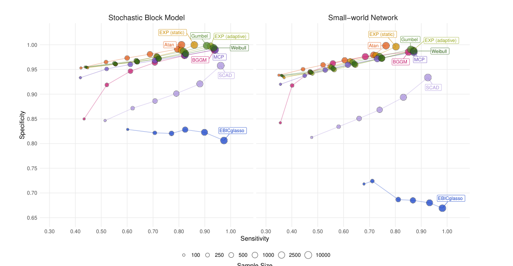
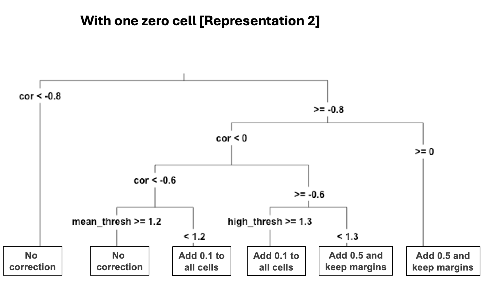
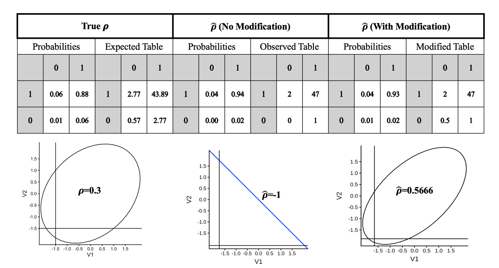
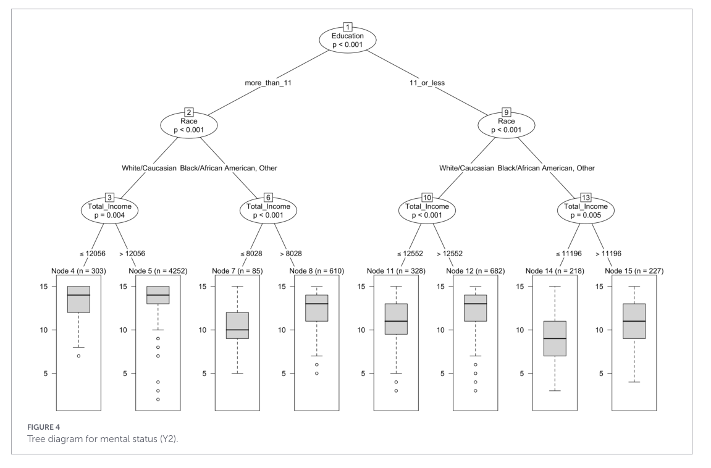

Research
Featured Research

Construct Semantic Maps (Dissertation)
Combines large language model item embeddings with network psychometrics to map the semantic space of a psychological construct. The map reveals which regions of the construct a scale covers well, where items are redundant, and where gaps (unmeasured regions) remain.
Dissertation in progress
Network Accuracy Across Levels of Analysis
A large-scale simulation using stochastic block models to evaluate how accurately estimated psychometric networks recover local (edges, centrality), mesoscale (communities), and global structures. The results show where common estimation methods succeed and break down across data types and sample sizes.
Psychological Methods (2026, online first) · Article
Data-Adaptive Regularization for Psychometric Networks
New adaptive penalties based on extreme value distributions that calibrate regularization to the empirical partial correlation distribution of the data, maintaining high specificity without sacrificing sensitivity. This addresses well-known limitations of the field-standard EBICglasso.
Psychometrika (accepted for special issue) · Preprint on OSF
Classification Trees for Method Selection
Uses classification trees on Monte Carlo simulation results to turn complex simulation findings into interpretable, practical decision rules. Researchers can choose a method based on features they can actually observe in their data rather than unknown population parameters.
Under review · Preprint on OSF
Zero-Frequency Cell Corrections in Tetrachoric Correlation
When binary data are sparse, a single empty cell can flip the estimated correlation to ±1, the opposite sign of the truth. This work comprehensively evaluates correction strategies for tetrachoric correlation estimation, extending findings to multivariate settings with practical recommendations.
Journal of Behavioral Data Science (2026) · Multivariate Behavioral Research (2025)
GLMM-Trees for Heterogeneous Cognitive Aging
A practical guide to combining mixed-effects models with decision trees to identify subgroups with distinct longitudinal trajectories. Applied to national aging data, it shows how education, race, and income jointly shape cognitive aging from an intersectional perspective.
Frontiers in Psychology (2026) · ArticlePeer-Reviewed Publications
- Christensen, A. P.†, & Choi, J.† (2026). Network accuracy across levels of analysis using stochastic block models. Psychological Methods. Online first. †Equal contribution.
- Choi, J., Homer, B., & Kim, S. (2026). Intersectional approaches to cognitive aging: A practical guide to modeling heterogeneous trajectories with GLMM-trees. Frontiers in Psychology, 17, 1738928.
- Choi, J., & Wu, H. (2026). Zero-frequency cell correction strategies in tetrachoric correlation estimation: Expanded strategies and multivariate implications. Journal of Behavioral Data Science, 6(1), 1–40.
- Oh, S., Kang, I. S., Kim, H. N., Park, J. S., Byeon, H. J., Lee, J., Jeong, I. O., Cho, S., Chae, H. N., Choi, J., & Ha, E. K. (2025). Development of a program to support minimum achievement levels in high school mathematics elective courses under Korea's credit-based high school system [고교학점제 수학 선택과목의 최소 성취수준 보장지도 프로그램 개발]. Communications of Mathematical Education [수학교육 논문집], 39(4), 729–763.
- Oh, S., Choi, J., & Lee, J. (2025). Analyzing the implementation of minimum achievement level assurance guidance in high school mathematics under the high school credit system [고교학점제 도입에 따른 고등학교 수학 교과 최소 성취수준 보장지도 운영 사례 분석]. Journal of Educational Research in Mathematics [수학교육학연구], 35(4), 1109–1138.
- Choi, J., & Wu, H. (2025). On zero-count correction strategies in tetrachoric correlation estimation. Multivariate Behavioral Research, 60(1), 3–4.
- Choi, J., & Hong, S. (2022). The impact of imposing equality constraints on residual variances across classes in regression mixture models. Frontiers in Psychology, 12, 736132.
- Lee, J., & Choi, J. (2021). A study on the level of use on the alignment with curriculum-instruction-evaluation-record and self-evaluation of secondary school teachers [중등교사들의 교육과정-수업-평가-기록 일체화 실행수준 점검 및 자기평가 분석]. Journal of Learner-Centered Curriculum and Instruction [학습자중심교과교육연구], 21(10), 167–187.
- Choi, J., & Lee, J. (2020). An analysis of middle and high school teachers' stages of concern in integration of curriculum-instruction-evaluation-records [교육과정-수업-평가-기록 일체화에 대한 중고등학교 교사의 관심수준 분석]. Journal of Learner-Centered Curriculum and Instruction [학습자중심교과교육연구], 20(20), 439–457.
- Choi, J., Oh, H., & Hong, S. (2020). The mediating effect between self-efficacy, happiness, and job satisfaction of wage workers with disabilities and the moderated mediating effect of work disruption due to disability [장애인 임금근로자의 자기효능감, 행복, 직무만족도 사이의 매개효과와 장애로 인한 업무 지장의 조절된 매개효과]. Korean Journal of Vocational Rehabilitation [직업재활연구], 30(2), 209–228.
- Choi, J., Jeon, H., Oh, H., & Hong, S. (2020). A study on the relationship between smartphone usage types and smartphone dependency of elementary school students — Focusing on contact and SNS use [초등학생의 스마트폰 사용 유형화 및 스마트폰 의존도와의 관계 분석: 연락 및 SNS 사용을 중심으로]. Korean Journal of Youth Studies [청소년학연구], 27(5), 331–354.
- Choi, J., Jeon, H., & Hong, S. (2020). An analysis of structural relationship between smartphone addiction and school adjustment among vulnerable adolescents: Using serial mediators of aggressiveness and ego-resiliency [취약계층 청소년의 스마트폰 중독과 학교적응 간 관계에서 공격성, 자아탄력성의 순차적 매개효과 검증]. Korean Journal of Youth Studies [청소년학연구], 27(2), 1–26.
- Jeon, H., Lee, C., Choi, J., & Hong, S. (2019). Job expectation trajectories of the elderly and their relationships with participation in social activities and personal factors [성장혼합모형을 적용한 미취업 장년층의 일자리 기대감 변화 유형화 및 영향요인 검증: 사회활동을 중심으로]. Korean Quarterly Journal of Labor Policy [노동정책연구], 19(4), 97–126.
Manuscripts Under Review & In Preparation
- Choi, J., & Wu, H. (under review). Using classification trees to identify the best method in Monte Carlo simulations: From population parameters to observed features.
- Christensen, A. P., & Choi, J. (in preparation). Adaptive regularization via extreme value distributions for Gaussian graphical models. Psychometrika. Accepted for special issue
- Garrido, L. E., Ortiz, L., Cordero, T., Nieto-Cañaveras, M. D., Choi, J., & Christensen, A. P. (in preparation). Benchmarking large language model embeddings for generative psychometrics. Psychometrika. Accepted for special issue
- Scale validation for an early at-home writing scale (in preparation), with Alexander Christensen, Sophia Vinci-Booher, and Elton Cross.
- Choi, J. (dissertation, in preparation). Construct semantic maps using item embeddings and network psychometrics.
Conference Presentations
2026
- Choi, J., & Wu, H. Classification trees for method selection in tetrachoric correlation estimation. International Meeting of the Psychometric Society, Seoul, Korea.
- Choi, J., & Christensen, A. P. Data-adaptive regularization for true edges in psychometric networks. APA Annual Convention, Washington, DC. Poster
- Choi, J., & Wu, H. Using classification trees for method selection from observed features in simulation. NCME Annual Meeting, Los Angeles, CA.
2024
- Choi, J., & Wu, H. Comprehensive examination of zero-frequency cell correction strategies in tetrachoric correlation estimation. SMEP Annual Meeting, Ithaca, NY. Poster
- Choi, J., & Christensen, A. P. Do (non-)regularized partial correlation networks generalize? Re-evaluation of network generalizability. International Meeting of the Psychometric Society, Prague, Czech Republic. Poster
- Choi, J., & Wu, H. Impact of zero-cell correction strategies on the estimation of tetrachoric correlation matrices. NCME Annual Meeting, Philadelphia, PA.
2023
- Choi, J., & Wu, H. Examining different approaches to treating zero-frequency cells in tetrachoric correlation estimation. International Meeting of the Psychometric Society, College Park, MD.
- Choi, J., & Wu, H. Examining different approaches to treating zero-frequency cells in polychoric correlation estimation. Modern Modeling Methods Conference, Storrs, CT. Poster
2018–2019
- Lee, S., & Choi, J. (2019). Latent profile analysis of types of subjective difficulties in terms of determining the career path of drop-out adolescents. Korean Society of Psychological Measurement and Assessment Fall Conference, Seoul, Korea. Poster
- Oh, H., & Choi, J. (2019). Latent transition analysis of stress levels among student financial aid recipients and its correspondence with job quality. Korean Educational Research Association Annual Conference, Seoul, Korea.
- Choi, J., Lee, C., & Jeon, H. (2019). Latent class analysis of types of school career education experiences and further explorations of their relationships with career maturity. Korean Society of Psychological Measurement and Assessment Spring Conference, Seoul, Korea. Poster
- Jeon, H., Lee, C., & Choi, J. (2019). Job expectation trajectories of the elderly and their relationships with social activity participation and personal factors. Conference of Employment Panel Survey, Seoul, Korea.
- Jeon, H., & Choi, J. (2018). Meticulous analysis of the effects of smartphone dependence, with focus on happiness index, sociability, and delinquency among adolescents. Korean Association for Survey Research Fall Conference, Seoul, Korea.